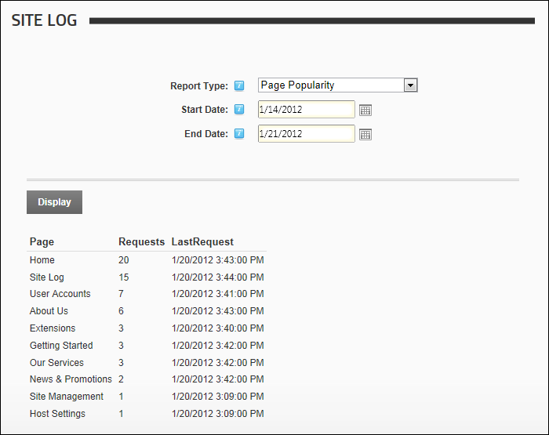

Page Popularity Report
The Page Popularity report displays a summary list of the most visited pages.
Report Fields:
- Page Name: The page being visited
- Requests: The number of times the page has been visited
- Last Request: The last time the page was visited

The Page Popularity Report